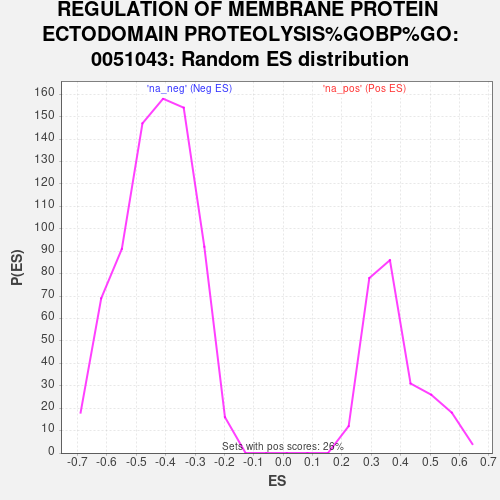

Profile of the Running ES Score & Positions of GeneSet Members on the Rank Ordered List
| Dataset | gene_ranks |
| Phenotype | NoPhenotypeAvailable |
| Upregulated in class | na_neg |
| GeneSet | REGULATION OF MEMBRANE PROTEIN ECTODOMAIN PROTEOLYSIS%GOBP%GO:0051043 |
| Enrichment Score (ES) | -0.7588683 |
| Normalized Enrichment Score (NES) | -1.7648928 |
| Nominal p-value | 0.0 |
| FDR q-value | 0.38226947 |
| FWER p-Value | 0.761 |
| SYMBOL | RANK IN GENE LIST | RANK METRIC SCORE | RUNNING ES | CORE ENRICHMENT | |
|---|---|---|---|---|---|
| 1 | TIMP1 | 2238 | 0.863 | -0.1040 | No |
| 2 | SNX9 | 3205 | 0.564 | -0.1435 | No |
| 3 | SH3D19 | 3882 | 0.429 | -0.1701 | No |
| 4 | ADAM8 | 5004 | 0.219 | -0.2282 | No |
| 5 | TSPAN17 | 7855 | -0.073 | -0.3896 | No |
| 6 | ADAM9 | 8540 | -0.158 | -0.4243 | No |
| 7 | ROCK1 | 12859 | -0.965 | -0.6447 | No |
| 8 | GPLD1 | 13275 | -1.091 | -0.6377 | No |
| 9 | SNX33 | 15389 | -2.007 | -0.7023 | Yes |
| 10 | TSPAN5 | 15595 | -2.135 | -0.6539 | Yes |
| 11 | PTPN3 | 15647 | -2.165 | -0.5959 | Yes |
| 12 | PACSIN3 | 15738 | -2.224 | -0.5384 | Yes |
| 13 | ADRA2A | 16082 | -2.483 | -0.4881 | Yes |
| 14 | TIMP2 | 16409 | -2.821 | -0.4273 | Yes |
| 15 | APOE | 16748 | -3.301 | -0.3537 | Yes |
| 16 | TSPAN15 | 16749 | -3.306 | -0.2606 | Yes |
| 17 | FURIN | 16780 | -3.353 | -0.1679 | Yes |
| 18 | TIMP3 | 17422 | -7.343 | 0.0022 | Yes |
